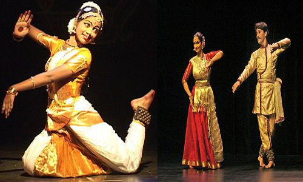
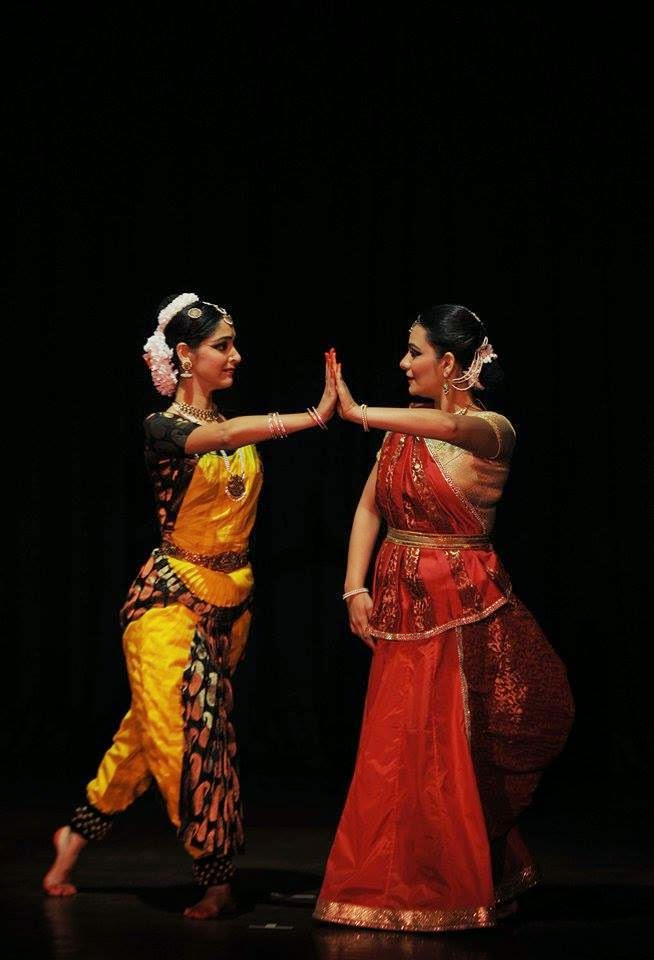
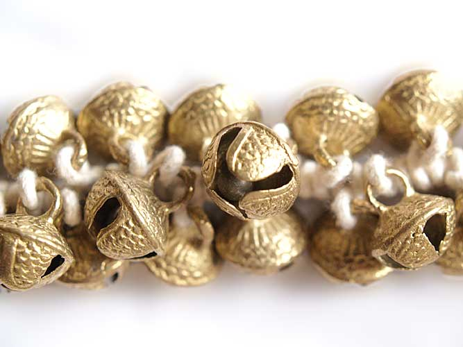
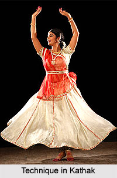

1 / 5

2 / 5

3 / 5

4 / 5

5 / 5

Kathak is one of the most important classical dances of India. Kathak is said to be derived from the word katha, meaning "the art of storytelling." The Kathak dance form originated in north India and was very similar to the Bharatnatyam dance form. In ancient India, there were Kathakars or bards who used to recite religious and mythological tales to the accompaniment music, mime and dance.
Under the influence of Persian and Muslim traditions Kathak dance assumed the form of courtly entertainment. Under the patronage of medieval rulers and Nawabs a class of dancing girls and courtesans emerged to entertain the palaces and courts. Medieval traditions imparted Kathak a distinct Hindu-Muslim texture. Thus, with the passage of time Kathak went on changing its form and character. This change was also reflected in the dress of Kathak dance.
During the nineteenth century Kathak enjoyed a revival and gained prominence among the kings and zamindars (feudal lords) not only as a form of entertainment but also as a classical art form. Slowly and gradually Gharanas or schools of Kathak emerged. The Jaipur Gharana of Kathak emphasized technical mastery of pure dance. In the court of Wajid Ali Shah, the Nawab of Oudh (a student of Kathak), Kathak dance emphasized dramatic and sensuous expression and developed into a distinct style called the Lucknow Gharana. This Gharana is said to have originated with Wajid Ali Shah's court dancer Thakur Prasadji.
Kathak dances are performed straight-legged and the ankle bells worn by the dancers are skillfully controlled. In Kathak dance the emphasis is more on footwork as against hasta mudras or hand formations in Bharatnatyam dance. Kathak dance can be performed by both men and women. A Kathak dancer is not required strictly to stick to fixed steps and stages in. He or she can change the sequence of steps to suit his or her skill and style of dancing. Modern exponents of Kathak dance are Birju Maharaj and Uma Sharma.
Native to Tamil Nadu (a state in Southern India), Bharatanatyam is one of the popular Indian classical dance forms. Previously referred to as Sadir, Dasiattam and Thanjavur Natyam, it demands unconditional and complete dedication from the performer. The dynamic and earthy style of this dance makes it one of the most chosen forms of Indian classical art forms. Although Bharatanatyam is predominantly performed by women, men are also known to engage in it. While the women wear a typical sari in the dance performance, men have bare chest and wear a dhoti-like outfit in the lower part of the body. History Bharatanatyam, which we know today, evolved during the late 18th or early 19th century. In the ancient India, the devadasis performed Bharatanatyam (previously known as dasiattam) in various parts of Tamil Nadu. With society losing its values, the art form fell from its supreme position to a 'dance that was performed by shameless people', during 1910-1930s. Nevertheless, the dance regained its lost popularity over the passing years, through the commendable works of renowned Bharatanatyam artists like E. Krishna Iyer. Another prominent name in the dance form is Rukmini Devi Arundale, who played a significant role in modifying mainly the Pandanallur style of Bharatanatyam and bringing it to the attention of the Westerners. The Steps & Performance Bharatanatyam is always performed with the knees of the dancers bent. The dance form emphasizes on the hand movements to convey different kinds of emotions to the spectator. While performing Bharatanatyam, the artist visualizes his/her body as made up of triangles. The steps of the dance are based upon a balanced distribution of body weight and firm positions of the lower limbs, allowing the hands to cut into a line, to flow around the body, or to take positions that enhance the basic form. In order to perform Bharatnatyam, the artist should have the knowledge of the numerous subtle features of the dance style.